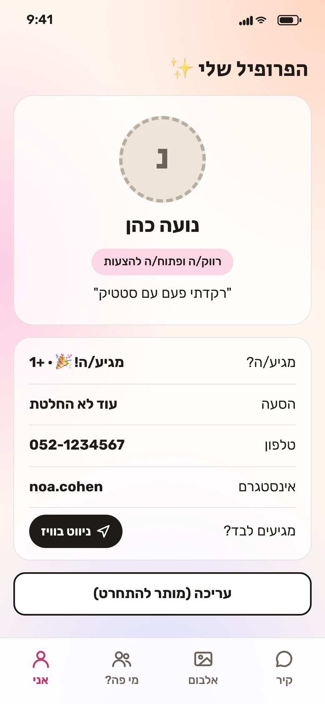

One app, the whole wedding
Meet people at the wedding
Guest cards with a fun fact and a status. Singles can choose to show they're open to meeting, and a nudge lets someone know you noticed them. I removed the singles and taken filters, so nobody ends up alone in a category.
Blessings, photos and a countdown
The heart of the app: guests post blessings and photos for the couple, see how many days are left, and get prompts when they don't know what to write.
Everyone's photos, in one place
One shared album with an add-photo button right in the grid. Photos sent only to the couple show up blurred with a lock. Plus a "find me" option that shows the photos you appear in, no more begging friends on WhatsApp.
A gift, without the envelope
Guests can send money to the couple straight from the app, with a note. They type an amount, add a few words and choose Bit, PayBox or a card. Only the couple sees how much.


Guest & shuttle management
Every guest sees and edits their RSVP, +1 and shuttle seat at any time, so the couple always has an up-to-date list. Those who can't make it still leave a blessing, with no guilt.